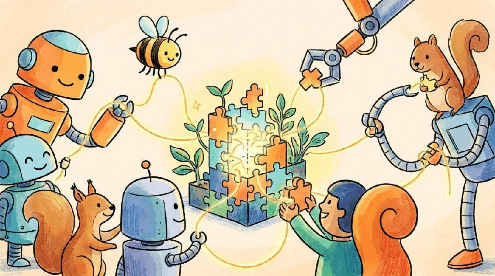

"None of us is as smart as all of us."
Echo, Co-Operative AI Agent
One agent (Chapter 26) with tools (Chapter 27) handles most production tasks. Some tasks need several agents. This chapter covers the framework landscape (LangGraph, CrewAI, AutoGen, Swarm), the architectural patterns (supervisor, hierarchical, debate, ensemble), and the engineering reality: most "multi-agent" systems work because they replicate one good agent with role-specific prompts, not because of any deep coordination magic.
Chapter Overview
Anthropic's research-agent paper from June 2025 reported that a multi-agent orchestrator-plus-workers setup outperformed a single Claude agent by 90 percent on the company's internal research benchmark, while burning roughly 15 times the tokens. That is the multi-agent trade: more roles, more debate, more compute, and sometimes more right answers. Most teams over-buy: a well-prompted single agent solves 80 percent of problems with no orchestration tax. This chapter is about the 20 percent where extra agents actually pay for themselves, and the LangGraph, CrewAI, AutoGen, and OpenAI Agents SDK patterns that let you build them without a state-machine graveyard.
You will learn to design multi-agent architectures using supervisor, pipeline, mesh, swarm, hierarchical, and debate topologies. The chapter covers structured communication protocols with consensus mechanisms, durable state management using LangGraph state machines and Temporal, and human-in-the-loop interaction points with graduated autonomy and trust calibration. Building on the single-agent foundations from Chapter 26, these patterns connect to the safety considerations in Chapter 25.
Complex tasks often exceed what a single agent can handle. Multi-agent systems use collaboration patterns like supervisor hierarchies, debate, and pipeline architectures to decompose problems. This chapter builds on the single-agent foundations of Chapter 26 and connects to the safety considerations of Chapter 25.
- Compare major multi-agent frameworks (LangGraph, CrewAI, AutoGen, OpenAI Agents SDK, Google ADK) and select the right one for a given use case
- Design multi-agent architectures using supervisor, pipeline, mesh, swarm, hierarchical, and debate topologies
- Implement structured communication protocols with consensus mechanisms and strategies to prevent sycophantic convergence
- Build durable, checkpointed agent workflows using LangGraph state machines or Temporal for long-running orchestration
- Design human-in-the-loop interaction points with graduated autonomy and trust calibration
Prerequisites
- Chapter 26: AI Agent Foundations (ReAct loop, agent architectures, planning and memory)
- Chapter 27: Tool Use, Function Calling & Protocols (function calling, MCP, A2A protocol)
- Chapter 12: Prompt Engineering (system prompts, structured outputs, chain-of-thought)
- Familiarity with Python async patterns and basic graph or state machine concepts
Sections
- 28.1 Framework Landscape The agent framework you choose shapes every architectural decision that follows. Entry
- 28.2 Architecture Patterns The topology of your multi-agent system determines its reliability, latency, and failure modes. Intermediate
- 28.3 Human-in-the-Loop Agent Systems Full autonomy is a spectrum, not a switch, and the wisest agent systems know exactly where on that spectrum each action falls. Advanced
- 28.4 Testing Multi-Agent Systems Testing multi-agent systems is a combinatorial challenge that standard unit testing cannot solve alone. Advanced
What's Next?
Next: Chapter 29: Specialized Agents. The patterns in Chapter 28 are generic; Chapter 29 zooms into the agent types that are actually shipping revenue in 2026: coding agents (Claude Code, Cursor, Windsurf, Devin), research agents, data-analysis agents, browser-use agents, and computer-use agents. Each has a distinctive architecture, and the differences between them are the lessons.